Travaux publics, bureaux d'études, promoteurs, immobilier, retail, logistique, agriculture, assurance : ici, pas d'obligation légale à respecter mais un avantage concret à en tirer. Chaque traitement géographique est pensé pour un objectif mesurable, réduire un coût, sécuriser un investissement ou gagner un marché.
Pour une entreprise privée, un traitement géographique n'a de valeur que s'il se traduit en gain direct : un chantier réceptionné plus vite, un site mieux choisi, une tournée plus courte, un risque mieux tarifé.
Nous livrons des analyses directement exploitables par vos équipes commerciales, techniques ou de direction, pas seulement des cartes.
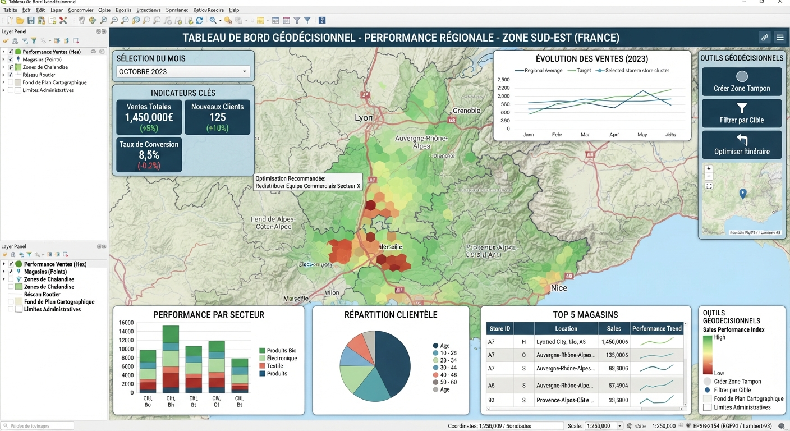
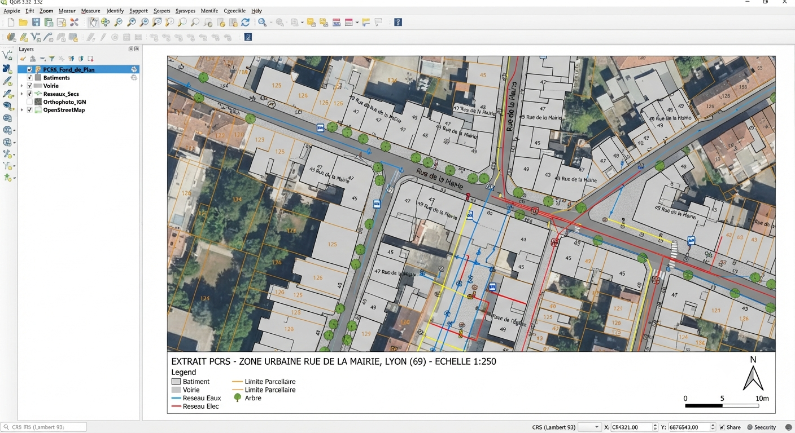
Levé de récolement conforme au Plan de Corps de Rue Simplifié, livrable directement intégrable par les exploitants de réseaux.
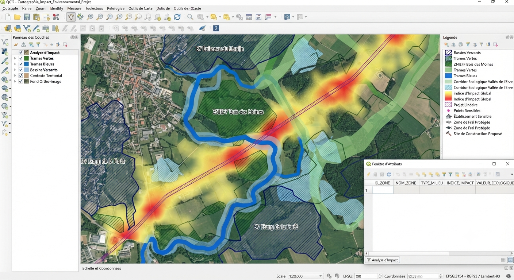
Modélisation de bassins versants et de trames verte/bleue sur QGIS pour vos dossiers réglementaires (VRD, environnement).
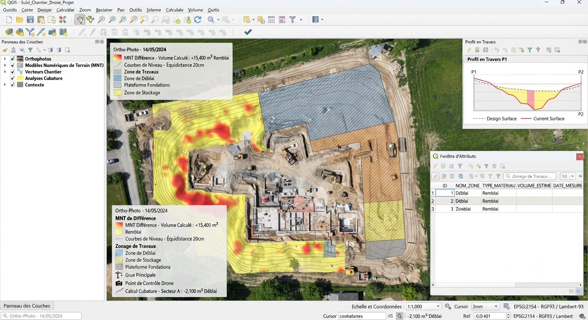
Photogrammétrie et orthophotos pour un suivi de chantier régulier et des calculs de cubatures précis.
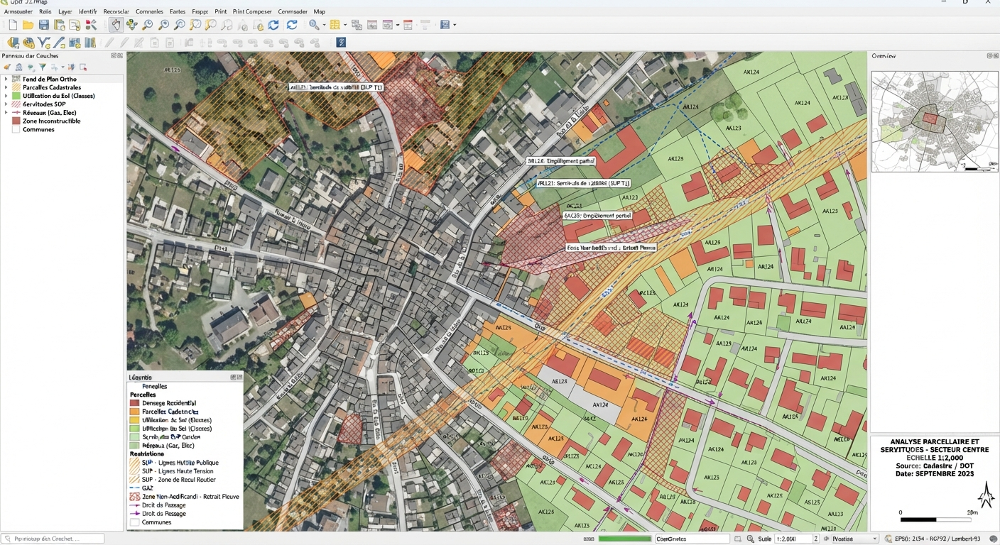
Vérification des servitudes d'utilité publique et du potentiel constructible avant tout achat foncier ou dépôt de permis.
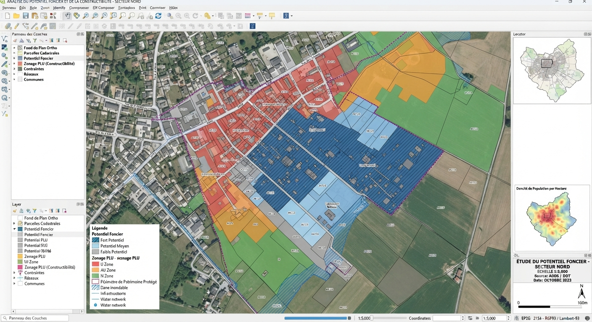
Identification des parcelles à fort potentiel de valorisation à partir du zonage PLU et des règles de constructibilité.
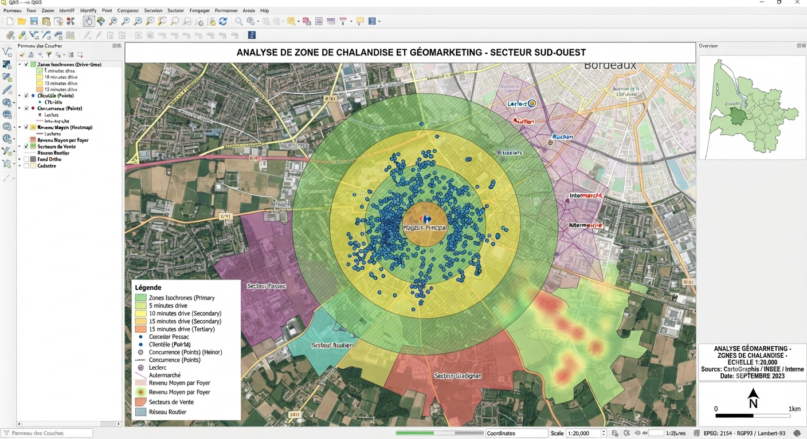
Étude d'implantation croisant données commerciales et données géographiques pour orienter la prospection.
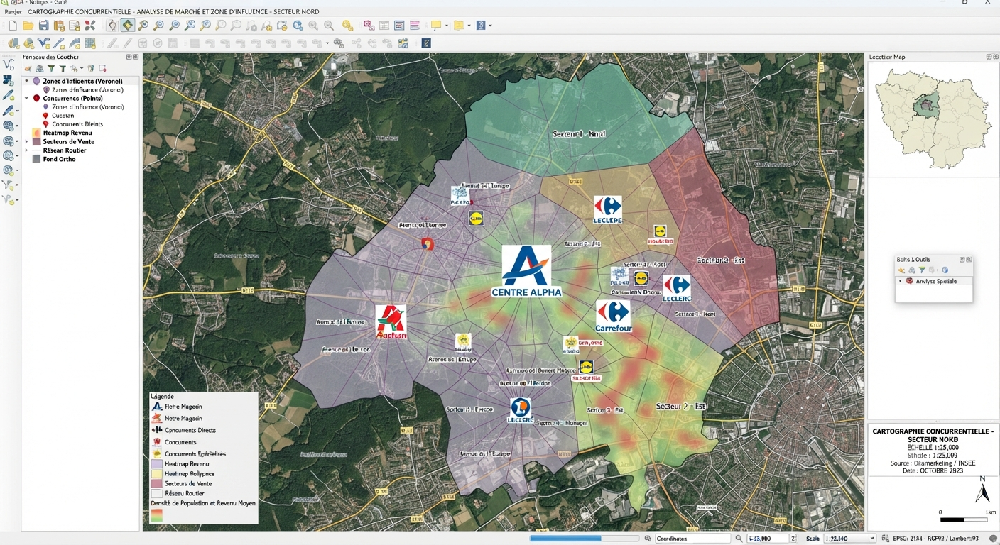
Maillage des concurrents existants pour anticiper les zones de cannibalisation avant ouverture.
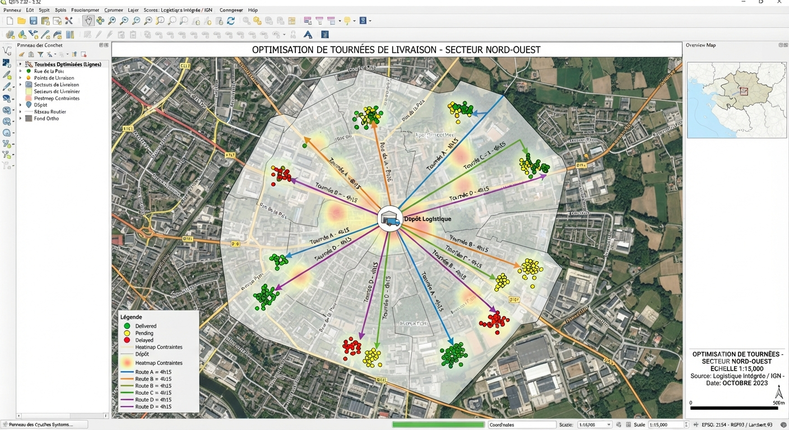
Calcul des itinéraires de livraison les plus efficaces à partir de vos contraintes de terrain et de créneaux.
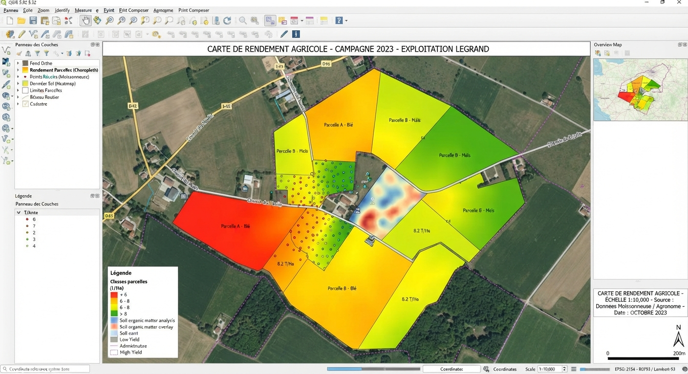
Télédétection et cartes de rendement par parcelle pour ajuster les intrants au plus près du besoin réel.
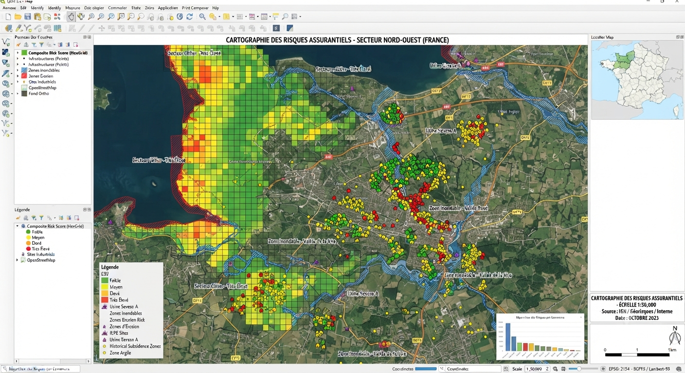
Croisement de l'exposition aux catastrophes naturelles (géorisques) avec votre portefeuille de contrats.
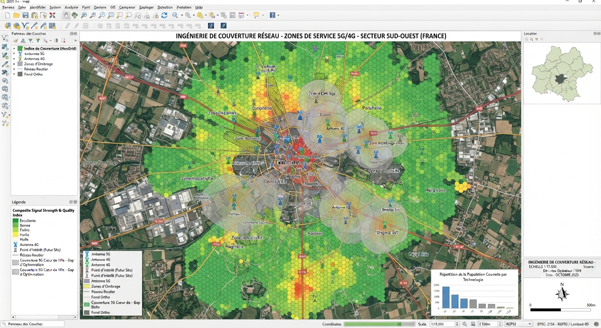
Cartographie de couverture et priorisation des zones de déploiement selon leur rentabilité prévisionnelle.
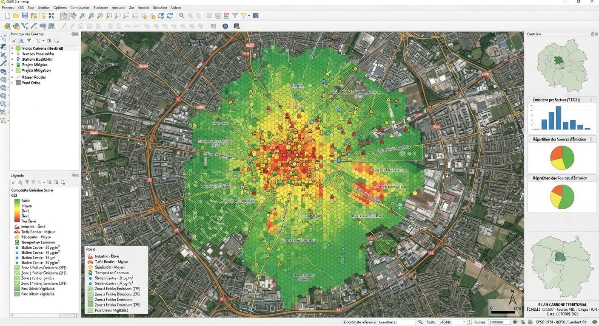
Cartographie de l'empreinte environnementale de vos sites et flux pour vos obligations de reporting.
Décrivez votre projet, nous chiffrons rapidement un traitement sur mesure.